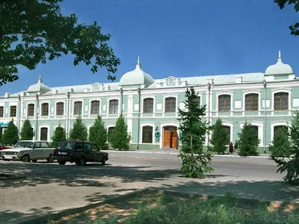
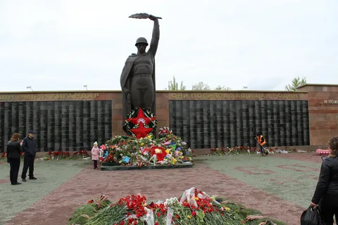
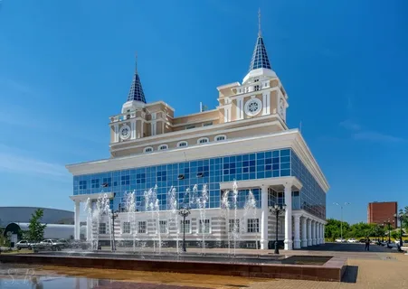
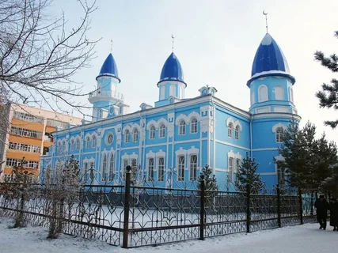
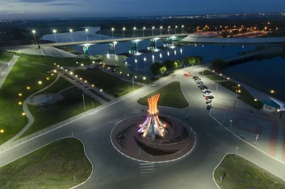
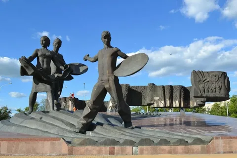

Костанай
Костанай — крупный город на севере Казахстана, административный центр Костанайской области. Город активно развивается в промышленной и культурной сферах.
Население: около 240 тысяч человек
Основан: 1879 год
История
Костанай основан как станция на Транссибирской железной дороге. Город развивался как центр сельского хозяйства и торговли, а позже стал промышленным и культурным центром северного Казахстана.
Достопримечательности
-

Областной краеведческий музей— музей с археологическими находками и экспонатами истории области
-

Парк победы — центральный городской парк с памятниками и зоной отдыха
-

Областной казахский театр драмы им. И. Омарова - культурный центр города
-

Мечеть имени Марал-ишана-историческое культовое здание города
-

Набережная реки Тобол-популярное место отдыха
-

Монумент "Покоритерям целины"-символ трудовых подвигов костанайцев
Культура
Костанай известен как центр культуры и образования северного Казахстана. Здесь проходят театральные постановки, выставки и музыкальные фестивали. Много библиотек и галерей для любителей искусства.
Интересные факты
- Костанай был основан как железнодорожная станция в 1879 году
- Город активно развивается в сфере сельского хозяйства и образования
- В Костанае находится крупнейший в регионе драматический театр